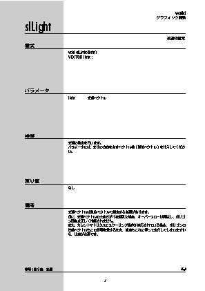

The following figure explains how to read the function reference. Structure references are a little different, but the basic view is the same.

Function type
Function type Function name
Function function Return when executing function
Indicates the value.
using figures etc.
Supplementary explanation and
Notes etc.
Have said.
Indicates the document to be referenced.
Example) Chapter 3 Light Source: Indicates the reference chapter of Programmer's Tutorial.
HARDWARE MANUAL vol.2 (VDP2): Indicates the developer binder to be referenced.